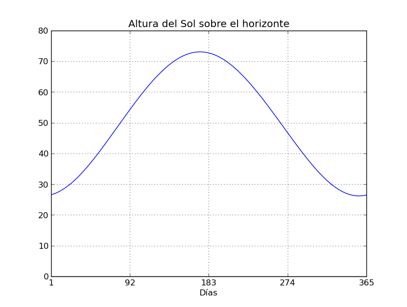

Calculando la altura solar
Situar la posición del una estrella en el cielo es una tarea básica a la hora de iniciar un estudio u observación sobre esta. Al igual que sobre la tierra, para orientarnos en el cielo los astrónomos han desarrollado varios sistemas de coordenadas. En este artículo me voy a centrar en las coordenadas horizontales. Este sistema de coordenadas toma como referencia o inicio de medición la posición del observador. Esto las hace particulares y poco aptas para la generalización de medidas a escala global, pues las coordenadas de una estrella cambiarían según la posición desde la que tomemos la observación.
En este sistema de coordenadas las estrellas poseen dos coordenadas: El Azimut o el ángulo en nuestro plano horizontal entre meridiano Sur y la proyección de la estrella (midiendo hacia el oeste) y la Altura o el ángulo entre dicho plano horizontal y la recta que une nuestra posición con la estrella. A esta altura también se la suele llamar elevación. Para medir la elevación o altura del Sol, los astrónomos han utilizado instrumentos diversos incluido el primitivo gnomon usado desde la antigüedad. La altura máxima del Sol durante el día se alcanza en el mediodía solar, el cual nos resultará fácil de calcular utilizando la ecuación de tiempo del anterior artículo. Utilizando un palo de una medida conocida la sombra que este proyecta sobre el suelo, medida en el mediodía solar, nos será fácil conocer dicho ángulo usando trigonometría básica.

Desde un punto de vista numérico, he calculado ambas coordenadas a través de otras no relativas a la posición del observador como son las denominadas ecuatoriales horarias, formadas por la declinación y el ángulo horario. Los cálculos están obtenidos de . Una vez calculada dicha altura y graficada adecuadamente es fácil comprobar los días correspondientes a los solsticios, en los que el sol posee la mayor y la menor altura. Todos estos cálculos están implementados en mi Github.
Lo siguiente que quiero calcular es la cantidad de horas de luz solar sobre un lugar a partir de la hora del amanecer y el atardecer. Para ello voy a ayudarme de una librería ya prefabricada en Python para el este tipo de cálculos llamada PyEphem. Os iré contando.
Febrero 2015